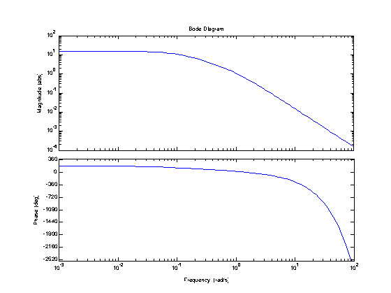
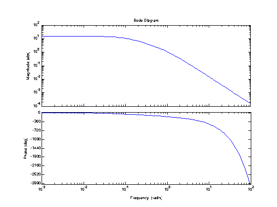
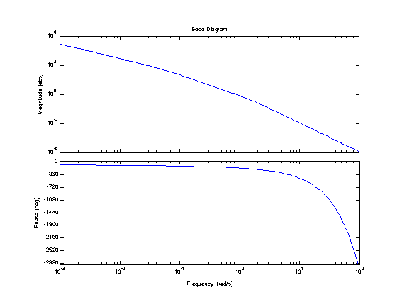
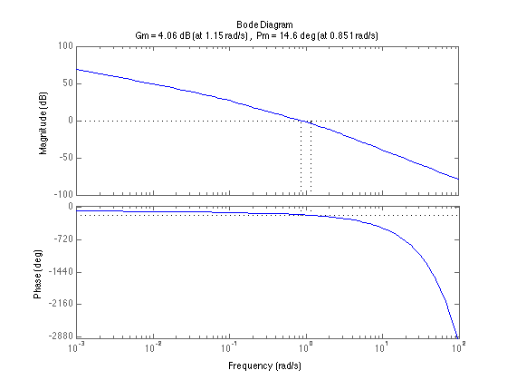
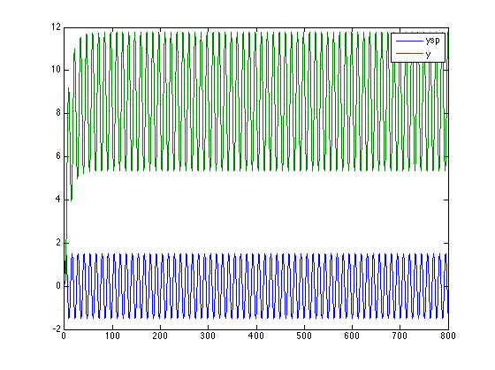
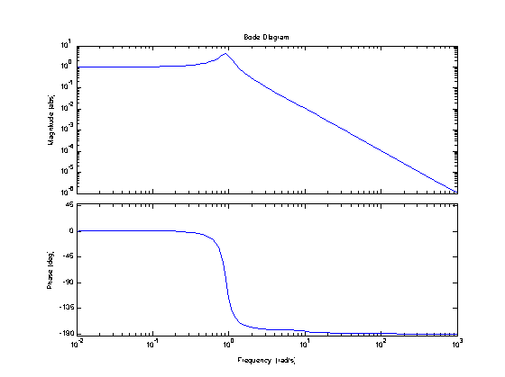
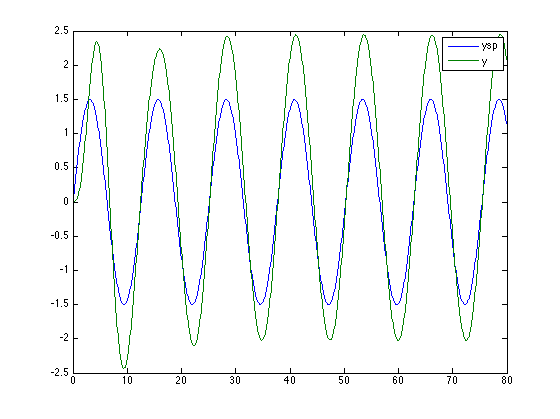

Problem 14.29
File: Ch14_P29.m
Contents
Consider a standard feedback control system with the following transfer functions:
Gm = tf([1],[1],'InputDelay',0.5)
Gv = tf([-10],[1 1])
Gp = tf([1.5],[10 1])
Gd = tf([2],[6 1])
Gm =
exp(-0.5*s) * (1)
Continuous-time transfer function.
Gv =
-10
-----
s + 1
Continuous-time transfer function.
Gp =
1.5
--------
10 s + 1
Continuous-time transfer function.
Gd =
2
-------
6 s + 1
Continuous-time transfer function.
Part (a). Open loop transfer function.
Plot the Bode diagram for the transfer function G = Gv*Gp*Gm
G = Gm*Gp*Gv; P = bodeoptions; P.MagUnits = 'abs'; P.MagScale = 'log'; bode(G,P);
Part (b). PI Control.
Design a PI controller for this process and sketch the asymptotic Bode diagram for the open-loop transfer function.
% We'll use Ziegler-Nichols tuning to design a PI controller. The first % step is to compute the gain margin and cross-over frequency. Because % there is a transfer function with a negative gain, we'll use -G for the % margin calculation. bodeplot(-G,P);
[Kcu,~,wco] = margin(-G)
Kcu =
1.5918
wco =
1.3905
Pu = 2*pi/wco; Kp = 0.45*Kcu Ti = Pu/1.2
Kp =
0.7163
Ti =
3.7655
% Note that we use a negative gain for the controller in order to % compensate for the negative gain of Gv. K = -Kp*tf([Ti 1],[Ti 0]); bode(Gp*Gv*K*Gm,P);
Part (c). Closed loop stability.
Analyze the stability of the resulting feedback control system.
% Compute the gain and phase margin of K*G. A gain at crossover less than % one, and a positive phase margin both indicate closed-loop stability. margin(G*K);
Part (d). Open-loop sinusoidal response.
Suppose that under open-loop conditions, a sinusoidal set-point change, ysp(t) = 1.5*sin(0.5*t), is introduced. What is the amplitude of the measured output signal ym(t) that is also sinusoidal in nature?
% The first method is to evaluate the amplitude ratio at w = 0.5, then % use it to compute the output input_amplitude = 1.5; w = 0.5; [AR,phase] = bode(Gm*Gp*Gv*K,w); output_amplitude = AR*input_amplitude
output_amplitude =
3.2012
The second method is to do a direct simulation. Note there is a steady state offset due to the presence of an integrating term in the controller.
t = 0:.1:800; ysp = input_amplitude*sin(w*t); y = lsim(Gm*Gp*Gv*K,ysp,t); plot(t,ysp,t,y); legend('ysp','y');
Part (e). Closed-loop sinusoidal response.
Suppose that under open-loop conditions, a sinusoidal set-point change, ysp(t) = 1.5*sin(0.5*t), is introduced. What is the amplitude of the measured output signal ym(t) that is also sinusoidal in nature?
% Compute the closed-loop transfer function
Hyr = Gp*Gv*K/(1 + Gp*Gv*K*Gm);
bode(Hyr,P);
 Compute the Amplitude ratio at w = 0.5
input_amplitude = 1.5; w = 0.5; [AR,phase] = bode(Hyr,w) output_amplitude = AR*input_amplitude
AR =
1.5273
phase =
-8.2543
output_amplitude =
2.2909
The second method is to do a direct simulation. Note there is a steady state offset due to the presence of an integrating term in the controller.
t = 0:.1:80; ysp = input_amplitude*sin(w*t); y = lsim(Hyr,ysp,t); plot(t,ysp,t,y); legend('ysp','y');
Part (f). Discussion.
Parts (d) and (e) compare open-loop and closed-loop responses. Under open-loop conditions, there is no meaningful control of the process output, so measured output and setpoint are quite different. The integrating nature of the controller causes a steady state offset.
Under closed-loop conditions there is meaningful control. The Bode plot suggests good setpoint tracking up to at least a frequency of w = 0.1. Somewhat higher frequencies exhibit a resonance condition, which is why there is a modest amplification of the setpoint signal sinusoid with a frequency of w = 0.5.